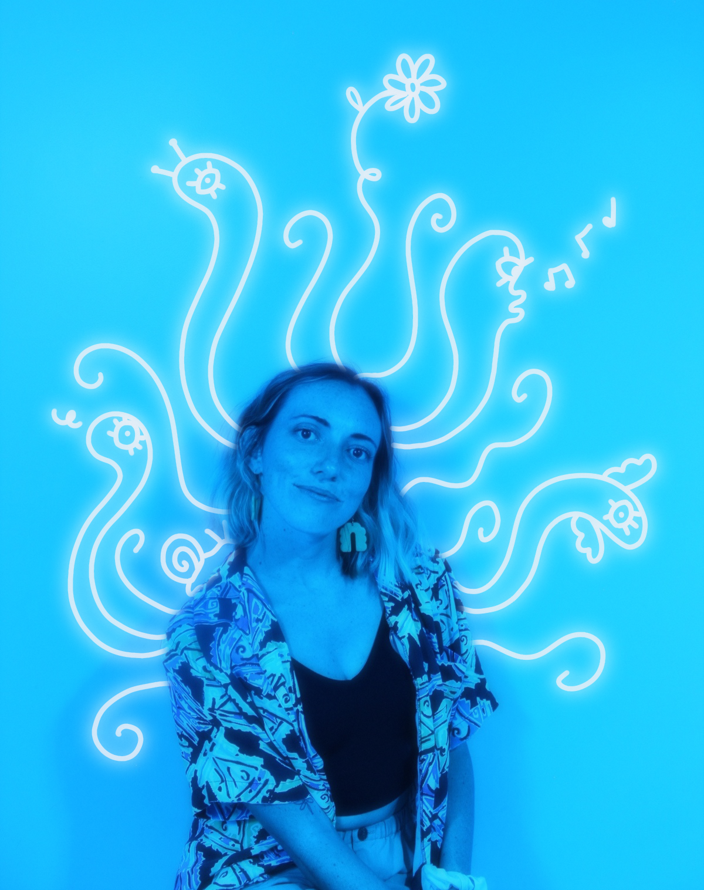

A little about me...
Hello! I’m Kali Coogan. I’m a 5-foot Sagittarius who likes to design, illustrate, play guitar, practice yoga and so much more! One thing you will learn about me is that I have a lot of hobbies. I’m from San Diego and recently relocated to Orange County to go to Cal State Fullerton. I’m familiar with HTML and CSS and have some experience with web design. After I graduate CSUF in fall with a Graphic and Interactive Design degree, I’m interested in going into UI/UX design. However, I'm not too picky about what career I go into. If I’m able to have a career that allows me to be creative then I’ll be happy!
I would define myself in many ways. I’m curious about many subjects and like to solve problems around me. I try to be playful with my solutions and sometimes find some interesting answers. I can easily learn new skills and adapt to any environment. I’d say my personality is easygoing yet whimsical since I am very animated and talk with my hands a lot. I’ve been told I can be intense at times, but then I can be introspective as well. As a yogi, I’ve learned to go within and trust in my intuition, especially with my design work. In the end, I think the most important thing about me is that I’m a life-long learner. For me, life is all about learning and growing.